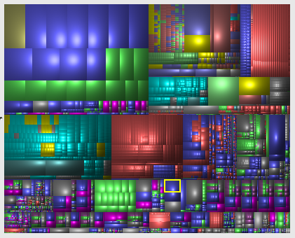
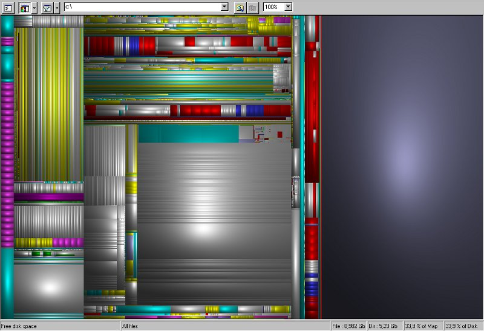
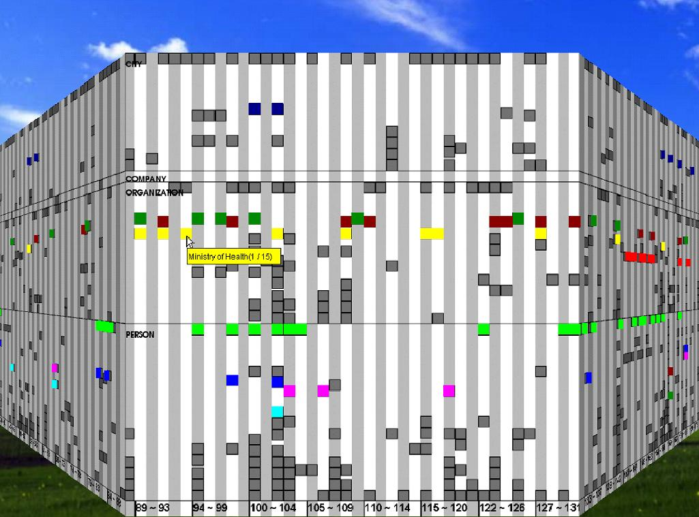
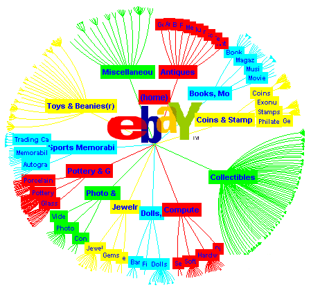
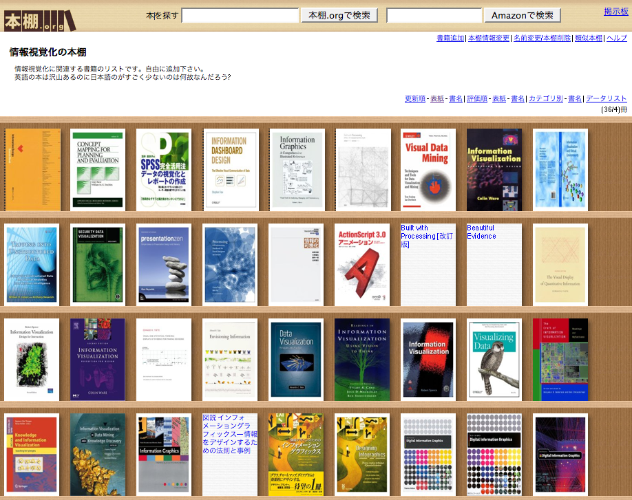

一方、下図はWindowsの SequoiaViewという ソフトを使ってファイルの大きさを視覚化した例です。

後発のDisk Inventory XはおそらくSequoiaViewに触発されたと思われるので 外見がよく似ていますが、 階層的に配置した矩形の集合でファイルサイズを表現するという方法は University of MarylandのHuman-Computer Interaction Labで開発された TreeMap というシステムに端を発しています。 ディスクの中にどんな大きさのファイルがどれほどあるのかはわかりにくいものですが、 TreeMapのような方法を使うと 大きなファイルの分布を直感的に把握することができます。 このように、 大量の情報をうまく画面上に表示することによって理解を助けるテクニックを 情報視覚化(Information Visualization)と呼びます。

1990年当時は高速3次元表示が可能な計算機は高価だったので このような研究を行なえる場所は限られていました。 また、視覚化が必要なほど大規模な情報もあまり利用できませんでしたから、 そのころ提案された情報視覚化手法はほとんど実用的に利用されることはありませんでした。 一方、最近はどんなパソコンでも高速にグラフィクス表示を行なうことができますし、 Web上の大規模なデータが簡単に入手できるようになってきました。 パソコンの中にはかなりの量のファイルが入っているのが普通ですし、 Web上には何千万件単位のデータが沢山あります。 Ben Shneiderman氏の TreeMapの歴史というページ にはTreeMapの20年の歴史が解説されていますが、 情報視覚化の研究が始まって20年たってようやく本格的な応用が見えてきたようです。
下図は大規模なネットワーク情報を円板上に配置する “HyperbolicTree” という情報視覚化手法の例です。 HyperbolicTreeも90年代にPARCで開発されたもので、 現在注目しているノードを画面の中央に置き、 その親ノードと子ノードをその周囲に配置することを繰り返すことによって すべてのノードを円板内に表示するというものです。 中心から遠くなるほどノードやリンクを小さく表示することにより、 どれほど大きなデータでも画面内におさまるようにすることができます。

HyperbolicTreeは PARCから分離したInxightというベンチャー企業で “StarTree”という名前で販売されていましたが、 現在は Business Objectsという SAPの子会社に買収されてそこで販売されているようです。
私は “Focus + Context”を考慮して大規模な階層構造を視覚化できる LensBarというシステムを開発しています。 LensBarでは、 ユーザがマウスを左右に動かすことによって リストのズーミング操作を行なうことにより、 すべてのデータを表示したり重要なデータだけ 間引いて表示したりすることができます。 また、検索キーワードを指定することにより、 キーワードにマッチするエントリのみを表示対象とすることができるので、 フィルタリングにより表示量を制御しつつ 全体と詳細を同時にブラウズすることが可能になっています。 以下の動画は Cプログラムのテキストをズーミングしたりフィルタリングしたりしているところです。 マウスを左にドラッグしてズームアウトすると 関数名など重要なところだけ表示されます。 文字を入力するとマッチする行だけフィルタリングされ、 現在表示可能な行が左のスクロールバーの背景に表示されます。 フィルタリングしている状態でズーミング操作を行なうと、 指定したパタンにマッチしている行と重要な行が両方表示されるので、 プログラム全体においてマッチした行がどのように分布しているのかがわかります。
私が運営している 本棚.orgという書籍情報共有サイトでは 情報視覚化の本棚 という「本棚」が作ってあり、 下図のように情報視覚化に関連する各種の書籍が登録されています。 情報視覚化と銘うった日本語書籍はほとんどありませんが、 “Information Visualization”をタイトルに含む洋書はすでに沢山出版されています。 ハイパーテキストの研究がWebとして世の中に浸透するには20年かかりました。 全文テキスト検索の研究がAltaVistaをはじめとする検索エンジンとして世の中に 広まるのにも20年かかりました。 いよいよ情報視覚化の研究が世の中で注目される時代が近付いているような気がします。
